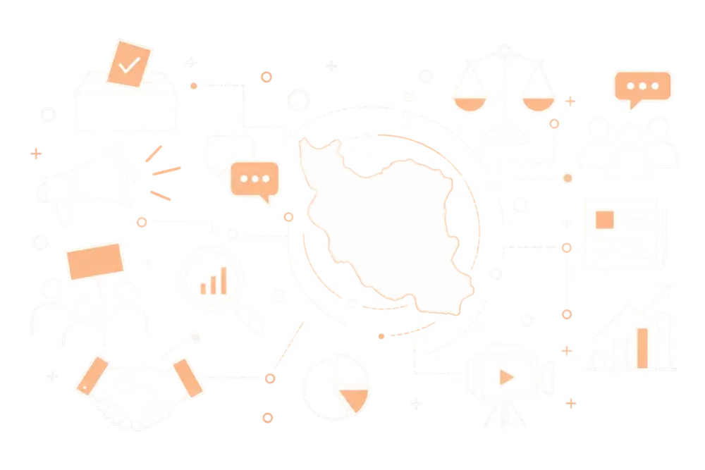

هر خط یک منبع: لینک کانال ایتا (eitaa.com/…)، تلگرام (t.me/…) یا آدرس فید RSS یک وبسایت. میتوانید بعد از لینک، با فاصله یا ویرگول، نام منبع را هم بنویسید. از اکسل هم میتوانید دو ستون «لینک» و «نام» را کپی کنید و اینجا بچسبانید.
برای همهی منابع تازه
جزئیات دیگر (عکس، صاحب کانال، تعداد مخاطب، گروهها) را بعداً از ویرایش هر منبع اضافه کنید.
ویرایش منبع
۱مشخصات منبع
۲موضوع
برای فیلتر «دستهبندی» و ستون «موضوع» در جدول کنشگران استفاده میشود.
۳در کدام بخشهای سایت نمایش داده شود؟
نبض فضای سیاسی اجتماعی به روایت حوزه علمیه خراسان

عرصههای رصد و پایش
اخبار و رویدادها
یادداشتها
درباره حوزه
کنشگری مجازی
برنامه مدارس
مواضع مراجع و علماء
جریان هر عرصه را بهصورت جداگانه رصد و پایش میکند: اخبار و رویدادهای خبرگزاریها، یادداشتهای افراد، سازمانها و اندیشکدههای تأثیرگذار، اخبار پایگاههای حوزوی همراه با آنچه دربارهی حوزه گفته میشود، کنشگری فضای مجازی، برنامههای مدارس و مواضع مراجع و علماء. هر عرصه با منبع داده و روش پایش مخصوص به خودش دنبال میشود.
رصد لحظهای
اخبار و رویدادها، کنشگری مجازی، مدارس و افراد را در یک سامانهی واحد و بهروز دنبال میکنیم. هر عرصه با روش پایش مخصوص به خودش رصد میشود تا هیچ تحولی در فضای سیاسیاجتماعی از دید جریان دور نماند.
تحلیل تخصصی
با نگاه جامعهشناسی سیاسی، رویدادها را از دل دادهها استخراج و تحلیل میکنیم. حاصل این تحلیل در قالب بستهی تحلیلی جریان، هر شماره در اختیار مخاطب قرار میگیرد.
دسترسی اختصاصی
با سطحبندی دقیق نقشها، اطلاعات حساس فقط در اختیار افراد مجاز قرار میگیرد. مدیران و بینندگان هرکدام دسترسی متناسب با نیاز خود را دارند، بدون افشای دادههای حساس.
بسته تحلیلی جریان
بسته تحلیلی جریان، خلاصهای تحلیلی، دقیق و چندلایه از تحولات سیاسیاجتماعی است که سعی دارد نگاهی جامع را در اختیار مخاطب قرار دهد. این بسته شامل ۱۰ بخش است.
خط خبریتحلیل اخبار روزمهمترین اخبارنگاه جامعهشناسی سیاسیاصل ماجراتحلیل سازمانهایادداشت طلابخارج از دیدنبض افکارتحلیل اندیشگدهها
اطلاع از انتشار بسته تحلیلی جریان
شماره موبایل خود را ثبت کنید تا هر وقت شمارهی جدید «بسته تحلیلی جریان» منتشر شد، پیامک اطلاعرسانی برایتان ارسال شود.
برای بهتر شدن بستههای جریان به ما کمک کنید
خلاصهی هوشمند اخبار مهم و موضوعات پرتکرار ۶ ساعت اخیر، تولیدشده با هوش مصنوعی.
برای پیدا کردن خبرهایی که هر کدام از چند واژه را دارند، واژهها را با «،» جدا کنید؛ مثلاً: بودجه، کمآبی
جستجوی هوشمند
موضوع:
همه
بازه زمانی
از
تا
همه رسانهها
انتخاب رسانهها…
هنوز خبری از منابع خبری جمعآوری نشده.
انتخاب روزنامهها…
مقایسهی تیترهای روزنامههابهزودیتیتر یک روزنامهها کنار هم و دستهبندیشده بر اساس گرایش؛ پس از راهاندازی دوبارهی هوش مصنوعی فعال میشود.
هنوز روزنامهای دریافت نشده.
فعلاً پروندهی موضوعی فعالی نیست.
خبرنامهی امروز
هنوز خبرنامهای منتشر نشده.
صفحه ۱ — ادعاها و شایعات
صفحه ۲ (ستون راست) — شبکههای اجتماعی و وبسایتها
صفحه ۲ (ستون چپ) — پروندههای موضوعی
اخبار منتخب (۶ الی ۱۲ ساعت اخیر)
تحلیل هوش مصنوعی هنوز آماده نشده — طبق زمانبندی روزی ۴ بار (۲، ۸، ۱۴ و ۲۰) بهروز میشود.
موضوعات پرتکرار
تحلیل هوش مصنوعی هنوز آماده نشده — طبق زمانبندی روزی ۴ بار (۲، ۸، ۱۴ و ۲۰) بهروز میشود.
جدیدترین ادعا یا شایعه
هنوز ادعا یا شایعهای ثبت نشده.
موجهای خبری (۱۲ ساعت اخیر)انتشار یک خبر در ۵ کانال یا بیشتر
پراکندگی زمانی انتشار خبر۲۴ ساعت اخیر، ساعتی
پرکارترین منابع۲۴ ساعت اخیر
گزارشهای تحلیلی برنامههای مدارس علمیه؛ برای بزرگنمایی روی هر گزارش بزنید.
هنوز گزارشی بارگذاری نشده.
یادداشتها و مطالب کانالهای معرفیشده بهعنوان چهرهی سیاسی.
مطلبی با این فیلتر پیدا نشد.
هنوز موردی در آرشیو بارگذاری نشده.
اخبار سیاسی و اجتماعی منتشرشده در پایگاههای خبری حوزوی.
شمارههای «بسته تحلیلی جریان»؛ برای مطالعه روی جلد یا دکمهی «مطالعه» بزنید.
هنوز مجلهای بارگذاری نشده.
چه چیزی میخواهید بارگذاری کنید؟
بارگذاری شمارهی جدید «بسته تحلیلی جریان»
موارد بارگذاریشده
بارگذاری بستهی تحلیلی یک نهاد
موارد بارگذاریشده
بارگذاری گزارش جدید مدارس
موارد بارگذاریشده
برای فعال شدن این بخش، فایل db/migration_036_announcements.sql باید یکبار در SQL Editor سوپابیس اجرا شود.
اطلاعیهی جدید
اطلاعیهها
همهی کانالها و مدیران آنها
پستهای منتشرشدهی کانالهای کنشگر فضای مجازی، قابلفیلتر بر اساس کانال، دسته و زمان.
بازه زمانی
از
تا
انتخاب کانالها…
جستجوی هوشمند
پستی با این فیلتر پیدا نشد.
هنوز کانالی برای «کنشگری مجازی» تگ نشده.
نام کانالبستر فعالیتصاحب کانالمخاطبفعالیتموضوعگروه
خروجی پستها
از
تا
اگر تاریخی انتخاب نکنید، مطالب ۳۰ روز اخیر خروجی گرفته میشود.
خروجی گزارش آنالیز
از
تا
اگر تاریخی انتخاب نکنید، ۳۰ روز اخیر بررسی میشود.
منابع
مدیریت منابعکانالها و سایتهایی که سامانه از آنها مطلب جمع میکند، و محل نمایش هرکدام در سایت
با کلیک روی هر منبع، مشخصات و بخشهایی از سایت که در آن نمایش داده میشود را ویرایش کنید.
منابع خزندهی «درباره حوزه»سایتهای خبریای که خزنده هر ۳ ساعت برای پیدا کردن خبرهای مربوط به حوزه میگردد
سایتهایی که در «مدیریت منابع» (با RSS، حتی فقط یک بخش از سایت) تعریف شدهاند، خودکار با نشانی اصلیشان به این فهرست اضافه و کامل گشته میشوند (سایتهای غیرفارسی متوقف اضافه میشوند). کانالهای ایتا، تلگرام و بلهی «مدیریت منابع» هم خودکار بررسی میشوند. خزنده خبرهای تازهی هر سایت را از فهرست خبری آن (sitemap)، فید RSS یا صفحهی اول پیدا میکند، متن کامل هر خبر را میخواند و خبرهایی را که دربارهی حوزه هستند در تب «آنچه درباره حوزه گفته میشود» نمایش میدهد. خبری مرتبط حساب میشود که یکی از این عبارتها در تیترش باشد یا در متنش دستکم ۲ بار بیاید: حوزه علمیه، حوزویان، طلاب و طلبه، روحانیت و روحانیون، مراجع و مرجع تقلید، جامعه مدرسین، شورای عالی حوزه، مدیر حوزهها، مدرسه و مدارس علمیه، معممین. پستهای کانالهای ایتا، تلگرام و بلهای که سامانه رصد میکند و صفحههایی که مطالب مرتبط به آنها لینک دادهاند هم با همین قاعده بررسی میشوند. برای افزودن سایت، نشانی صفحهی اول آن را وارد کنید؛ نشانی فهرست خبری (sitemap) اختیاری است و اگر خالی بماند، خودکار پیدا میشود.
پیشنهاد منبع
سایتها و کانالهای ایتا و تلگرامی که در مطالب مرتبط با حوزه به آنها لینک داده شده، ولی هنوز در فهرست منابع نیستند؛ هرچه بیشتر تکرار شده باشند، بالاتر میآیند. با «افزودن»، سایت به همین فهرست خزنده و کانال به «مدیریت منابع» اضافه میشود و از اجرای بعدی جستوجو میشود.
برچسبهای منابع
موضوع منابعدر فیلتر «دستهبندی» و ستون «موضوع» جدول کنشگران
منطقههای جغرافیاییدر فیلتر «منطقه» تبهای اخبار
گروههای چهرهها و سازمانهاگروهبندی گالری لوگوها در بخش «یادداشتها»
گروهها (مثل حزب ۱ / حزب ۲) برای هر تب جداگانه تعریف میشوند. عضویت هر منبع در گروهها از پنجرهی ویرایش همان منبع تنظیم میشود و هر منبع میتواند عضو چند گروه باشد.
اخبار
میانبرهای جستوجوی وبسایتهادکمههای جستوجوی آماده در تب «وبسایتها»
هر میانبر یک نام و چند کلیدواژه (جدا با ویرگول) دارد. در تب «وبسایتها»، با کلیک روی میانبر، مطالبی نمایش داده میشوند که دستکم یکی از کلیدواژهها را در عنوان یا متن داشته باشند.
پروندههای موضوعیموضوعات تب «پروندههای موضوعی»
موضوعات موقت که هر چند روز یکبار عوض میشوند. کلیدواژههای هر موضوع (جدا با ویرگول) هر ۲ ساعت با کلیدواژههای هوش مصنوعی مطالب تازه تطبیق داده میشوند. فقط موضوعات فعال به بیننده نمایش داده میشوند؛ غیرفعالکردن یک موضوع، مطالبش را حذف نمیکند.
نمایش سایت
برای فعال شدن این دو بخش، فایل db/migration_042_login_lock_site_settings.sql باید یکبار در SQL Editor سوپابیس اجرا شود.
حالت تعمیر و نگهداریبستن موقت سایت برای بینندهها، با یک پیام
وقتی روشن باشد، بینندهها پس از ورود بهجای سایت فقط پیام زیر را میبینند (روی صفحهی ورود هم نمایش داده میشود). مدیر مثل همیشه وارد سایت میشود. کاربرانی که سایت برایشان باز است، حداکثر تا ۵ دقیقه بعد پیام را میبینند.
بخشهای قابلمشاهده برای بینندههاروشن و خاموش کردن هر بخش یا تب
بخش یا تب خاموش، برای بینندهها از منو، صفحهی نخست و تببار برداشته میشود. شما بهعنوان مدیر همچنان آن را با برچسب «پنهان» میبینید. دادهها پاک نمیشوند و با روشن کردن دوباره برمیگردند.
امنیت
رمزهای عبوررمز ورود نقشهای مدیر و بیننده
رمز مدیرمدیردسترسی کامل، شامل همین صفحه
رمز بینندهبینندهاز ۵.۳۱.۰ فقط برای ورود اضطراری (پایینتر)
ورود با پیامکملیپیامک، پیامک آزمایشی و ورود اضطراری
برای ورود با پیامک، فایل db/migration_050_sms_login.sql باید یکبار در SQL Editor سوپابیس اجرا شود.
کاربران با کد ملی وارد میشوند و کد ورود به موبایل ثبتشدهشان در «کاربران» پیامک میشود. کلید وبسرویس فقط ذخیره میشود و دیگر نمایش داده نمیشود؛ برای تغییر، کلید تازه را وارد کنید.
پشتیبان تنظیماتفایلی از همهی تنظیمات این صفحه و کاربران، برای بازگرداندن بعد از خرابی یا حذف اشتباهی
اگر دیتابیس خراب یا جابهجا شود یا چیزی اشتباهی حذف شود، تنظیماتی که با دست ساخته شدهاند با این فایل برمیگردند. پیشنهاد: ماهی یکبار بگیرید و جای امنی (مثل گوگلدرایو) نگه دارید.
داخل فایل
داخل فایل نیست
پستها و روزنامهها (خودکار دوباره جمعآوری میشوند)
فایلهای بستههای تحلیلی و گزارشهای مدارس (PDF و عکسها)
رمزهای عبور (بعد از بازسازی دوباره تعیین میشوند)
مطالب انتخابشدهی پروندهها و خبرنامه (به پستها وابستهاند)
چطور از این فایل استفاده کنم؟
فایل را با Notepad (یا هر ویرایشگر متن) باز کنید و کل متن را کپی کنید.
در سوپابیس، پروژهی درست را باز کنید ← SQL Editor ← New query ← متن را بچسبانید ← Run.
فقط مواردی که در دیتابیس نیستند اضافه میشوند؛ چیزی که الان هست عوض یا پاک نمیشود. پس اجرای دوباره یا اجرا روی سایت فعلی بیخطر است.
روی پروژهی تازه، اول باید فایلهای ساختار دیتابیس (schema.sql و migrationها) اجرا شده باشند.
فضای ذخیرهسازیسقف پلن رایگان سوپابیس ۱ گیگابایت است؛ اگر پر شود، سایت قفل میشود.
سابقهی ظرفیتحجم فضای فایل و پایگاه داده در هر روز، به تفکیک دسته؛ هر شب ساعت ۰۰:۲۰ ثبت میشود.
سرویسهای مرتبطسایتها و سرویسهایی که «جریان» برای کار به آنها وابسته است. سبز یعنی در دسترس، زرد یعنی کُند، قرمز یعنی قطع یا خطا.
کارهای خودکارزمان آخرین خروجی هر کار و نتیجهی آخرین اجرای آن در گیتهاب. زرد یا قرمز یعنی باید بررسی شود.
برنامهی اجرانوبتهای اجرای امروز هر کار، از ساعت ۰۰ تا ۲۴ به وقت تهران. رنگ هر خانه نتیجهی اجرا و عدد آن دقیقهی اجراست؛ ردیف «تعداد کار» نشان میدهد در هر ساعت چند کار همزمان اجرا میشود.
ورودهاورودهای ۳۰ روز اخیر به سایت. ورود با کد ملی و پیامک نام هر نفر را دارد؛ ورود با رمز (مدیر یا ورود اضطراری بیننده) فقط نقش، دستگاه و IP را. ورود خودکار کارهای گیتهاب نمایش داده نمیشود.
هشدار ایمیلیایمیل فوری وقتی کاری خراب شود یا فضا و توکنها به حد خطر برسند، و گزارش روزانهی سلامت سامانه.
خطاهای مرورگر کاربرانخطاهایی که در ۷ روز اخیر در مرورگر کاربران رخ داده است. هر خطا در هر نشست یکبار شمرده میشود؛ متن پستها و رمزها ثبت نمیشوند.
منابع بیخبرمنابع فعالی که بیش از ۳ روز هیچ مطلبی از آنها نیامده (احتمال خرابی آدرس یا بستهشدن کانال).
انقضای توکنهابعد از انقضا، کار مربوطه بیصدا از کار میافتد؛ پیش از آن توکن جدید بسازید.
فهرست کاربران
ورود کاربران با کد ملی و پیامک است: فقط کاربرِ فعالی که کد ملی و موبایلش اینجا ثبت شده میتواند وارد شود (کاربر «مدیر» وارد بخش مدیریت میشود). کد ملی فقط بهصورت رمزنگاریشده ذخیره میشود و بعد از ثبت، فقط ۴ رقم آخرش دیده میشود. سطح دسترسی فعلاً فقط ثبت و نمایش میشود.
برای ورود با کد ملی و پیامک، فایل db/migration_050_sms_login.sql باید یکبار در SQL Editor سوپابیس اجرا شود.
برای ثبت کاربران، فایل db/migration_037_app_users.sql باید یکبار در SQL Editor سوپابیس اجرا شود. (مشترکین فرم اطلاعرسانی همین حالا هم پایین دیده میشوند.)
اطلاعرسانی گروهی۰ نفر انتخاب شده
ارسال پیامکبهزودیارسال در ایتابهزودی
ارسال مستقیم از همینجا بعد از اتصال سامانهی پیامکی (و در صورت تصمیم، کانال ایتا) فعال میشود.